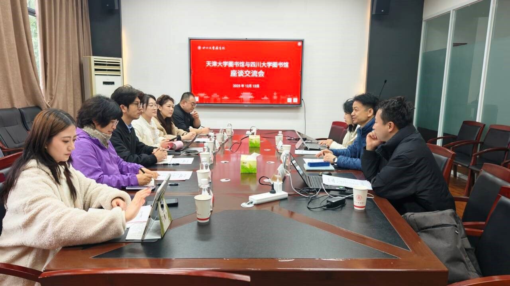

学院通知 · 科研创新
天津大学图书馆一行赴四川大学图书馆调研
发布时间：2025-12-13 10:16:38
2025年12月12日上午，天津大学图书馆学习支持中心北洋园读者服务部主任张文潇等一行6人，到访四川大学图书馆开展调研交流。交流会在四川大学望江校区工学图书馆五楼会议室举行，四川大学图书馆党委委员、馆长助理、学习支持中心主任胡琳，馆长助理、党政办公室主任肖敏，文献服务中心副主任淳姣，学习支持中心馆员王圣洁热情接待了来访人员，双方围绕核心议题展开深度研讨。 会上，胡琳对天津大学图书馆一行的到来表示热烈欢迎，围绕人工智能在图书馆服务与管理中的应用实践、红色文献资源体系建设与思政育人空间打造两大核心主题，详细分享了在 AI 相关服务开展、AI 专栏搭建、AI 素养教育推进、AI+馆员协同工作落地、智能体搭建探索，以及红色文献资源整合、思政育人场景创设、特色服务品牌打造等方面的实践经验与创新举措。 张文潇代表天津大学图书馆一行，介绍了本校图书馆架构模式及转型发展现状，重点说明了学习支持中心下设读者服务部的工作职能，以及在科研水平提升、AI业务探索、红色文献服务等方面的需求。其他参会人员结合自身业务实践，就跨部门协同、AI主题课程更新、志愿者团队管理、红色文化空间打造等具体问题展开互动交流，双方深入探讨了工作推进中的重点难点，分享了各自在行业探索中的思考与感悟。交流期间，天津大学图书馆一行实地参观了工学图书馆的开心花园、闳声角、3D打印区、考研加油站和“52经典阅读”主题展区等特色空间，直观感受了其在学习空间创新与读者服务融合方面的实践成果。 此次调研搭建了经验共享的优质平台，实现了理念碰撞与智慧互鉴，进一步拉近了两校图书馆的联系与共识。双方表示，将以此次交流为契机，吸收借鉴先进经验，持续优化业务布局，提升服务质量与创新能力，为高校人才培养与科研发展提供更有力的支撑。 文字：学习支持中心 王圣洁 图片：党政办公室 肖敏、文献服务中心淳姣
